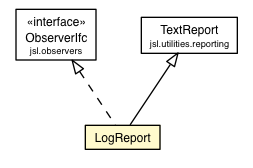

jsl.observers.textfile
Class LogReport

java.lang.Object
 jsl.utilities.reporting.TextReport
jsl.observers.textfile.LogReport
jsl.utilities.reporting.TextReport
jsl.observers.textfile.LogReport
- All Implemented Interfaces:
- ObserverIfc
public class LogReport
- extends TextReport
- implements ObserverIfc
| Methods inherited from class jsl.utilities.reporting.TextReport |
addFileNameAndDate, append, append, append, checkError, close, flush, format, format, getFile, print, print, print, print, print, print, print, print, print, printf, printf, println, println, println, println, println, println, println, println, println, println, write, write, write, write, write |
| Methods inherited from class java.lang.Object |
clone, equals, finalize, getClass, hashCode, notify, notifyAll, toString, wait, wait, wait |
df
DecimalFormat df
myTimedUpdateLogFlag
private boolean myTimedUpdateLogFlag
LogReport
public LogReport(String name)
LogReport
public LogReport(String directory,
String name)
turnOnTimedUpdateLogging
public void turnOnTimedUpdateLogging()
turnOffTimedUpdateLogging
public void turnOffTimedUpdateLogging()
update
public void update(Object subject,
Object arg)
- Description copied from interface:
ObserverIfc
- This method is called when the observable needs observing
- Specified by:
update in interface ObserverIfc
Copyright © 2012 Manuel D. Rossetti. All Rights Reserved.